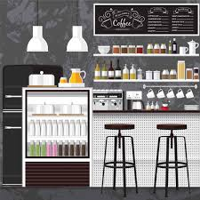
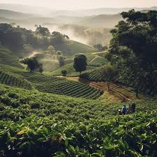
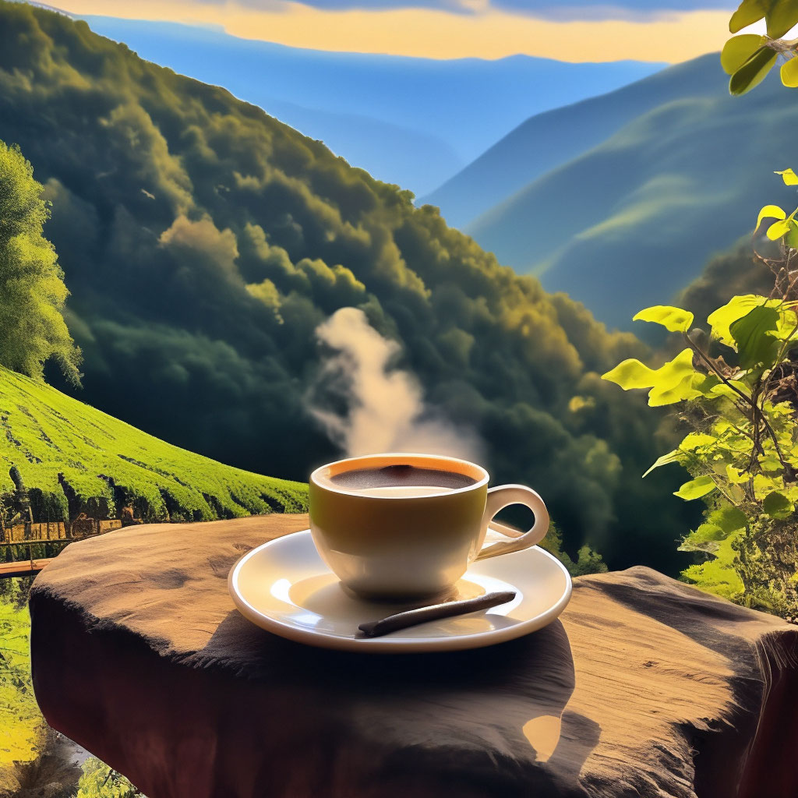

 Мы появились в далёком 2019 году, на волне популярности кофе-индустрии в России. Сначала мы решили открыть свою кофейню, которая называлась 'blacklist', но потом мы поняли, что наш товар нужно продавать каждому, и поэтому открыли интернет-магазин уже в 2021 году. С тех самых пор и идёт наша история о том, как мы продаём кофе для каждого ценителя, и желающего им стать. Наш штат ежедневно стремится расширить выборку предлагаемых товаров в ассортимент, снизить цены и ускорить доставку. Нас всегда заботила не прибыль, а любовь к кофе. Хорошему кофе.
 Наши товары привозятся со всего мира. Мы взаимодействуем напрямую с производителем, всего у нас более 100 проверенных поставщиков со всех уголков мира: от Юго-Восточной Азии до самых удаленных уголков Южной Америки. Здесь каждый точно сможет найти себе что-то по вкусу. И по кошельку, конечно. Множество из предложенных товаров вы не сможете отыскать где-либо ещё в России. И также очень важно, что мы специализируемся только на кофе. Аксессуары не имеют значения без хорошего кофе.
 Мы хотим, чтобы каждый смог насладится кофе. Наша цель - сделать его доступным, но и не забывать про честную оплату труда. Все производители, с которыми мы работаем, обеспечивают своих сотрудников полностью, соблюдая все условия труда. Даже тот кофе, который производится с использованием животных, всё равно остается экологичным производством. Конечно, мы заботимся и о нашей планете, поэтому мы никогда не работаем с теми, кто не заботится о Земле. Мы убеждены, что каждый может пить кофе по справедливой цене, заботясь при этом о других и об экологии. Вкус и Забота - вот что нас на самом деле волнует. И мы убеждены, что их сочетание возможно.